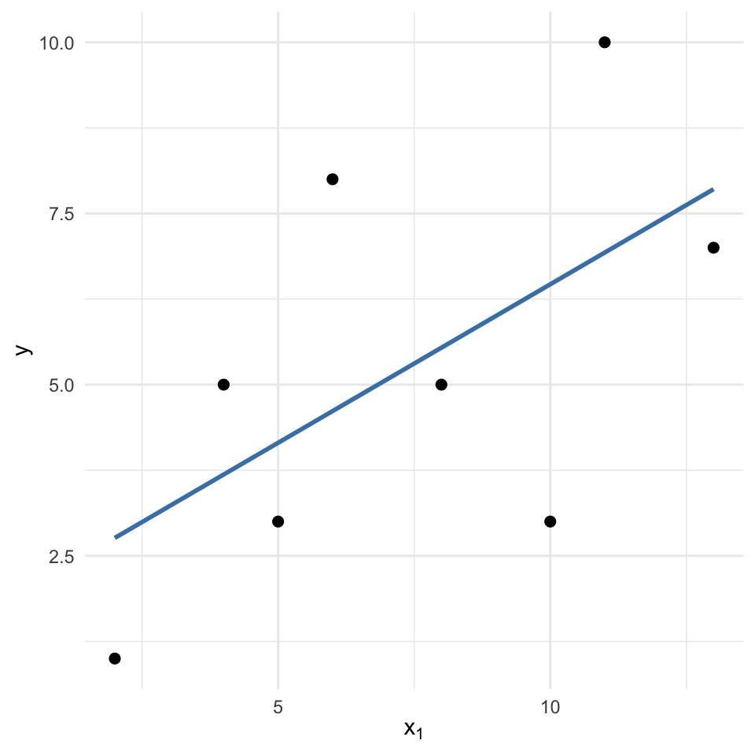
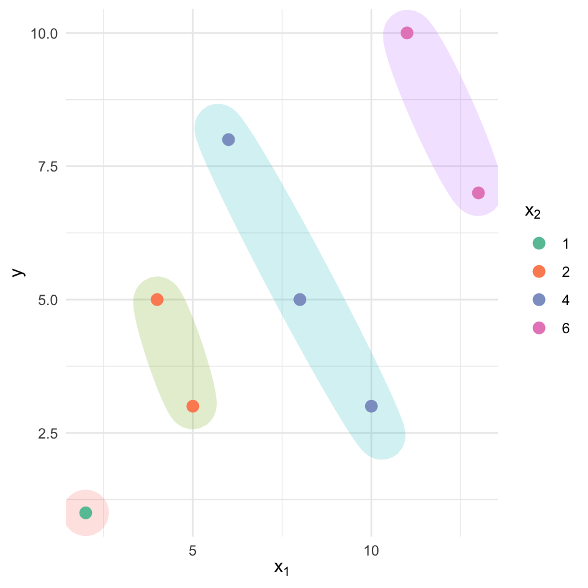

Call:
lm(formula = y ~ x1 + x2, data = sales_df)
Residuals:
1 2 3 4 5 6 7 8
-0.27273 -0.43141 0.18678 0.60826 -0.40773 0.55532 -0.30926 0.07076
Coefficients:
Estimate Std. Error t value Pr(>|t|)
(Intercept) 0.4301 0.3897 1.104 0.3200
x1 0.5464 0.1625 3.362 0.0201 *
x2 0.5021 0.1825 2.752 0.0402 *
---
Signif. codes: 0 '***' 0.001 '**' 0.01 '*' 0.05 '.' 0.1 ' ' 1
Residual standard error: 0.4981 on 5 degrees of freedom
Multiple R-squared: 0.9724, Adjusted R-squared: 0.9614
F-statistic: 88.1 on 2 and 5 DF, p-value: 0.000126528 Multiple Linear Regression
In earlier chapters, we worked with simple linear regression, where we modeled a response variable \(y\) using a single explanatory variable \(x\). However, many real-world problems involve several factors that may simultaneously influence the outcome.
Multiple linear regression extends the simple linear model by allowing more than one explanatory variable. In this framework, the goal is to model a dependent variable \(y\) as a linear function of \(K\) predictors:
\[ \hat{y} = b_0 + b_1 x_1 + b_2 x_2 + \dots + b_K x_K \]
Each coefficient \(b_k\) represents the partial effect of predictor \(x_k\) on the response, holding all other predictors constant.
Motivating Example: Smoking Type and Death Rate
To understand why multiple linear regression is often necessary, consider a classic example from Cochran (1968), which examines the relationship between smoking type and death rate.
The study compared two groups: Pipe smokers and Cigarette smokers. The outcome of interest was the death rate, measured as the number of deaths per 1,000 person-years.
Let:
- \(y\) be the death rate (per 1,000 person-years)
- \(x\) be a binary variable indicating smoking type: \[ x = \begin{cases} 0 & \text{if pipe smoker} \\ 1 & \text{if cigarette smoker} \end{cases} \]
We begin by fitting a simple linear regression model:
\[ \hat{y} = \hat{\beta}_0 + \hat{\beta}_1 x = 17 - 4x \]
Interpretation:
- For pipe smokers (\(x = 0\)), the predicted death rate is \(\hat{y} = 17\)
- For cigarette smokers (\(x = 1\)), the predicted death rate is \(\hat{y} = 13\)
This model seems to suggest that cigarette smokers have a lower death rate than pipe smokers by 4 deaths per 1,000 person-years. But this conclusion is counterintuitive and misleading. Why would cigarette smoking appear protective?
The likely explanation lies in confounding; in this case, the variable age. If cigarette smokers in the sample happen to be younger on average than pipe smokers, then age (a known risk factor for mortality) could explain the apparent protective effect.
To account for this, we expand the model to include age as an additional predictor:
Let:
- \(x_1\) = 0 for pipe smoker, 1 for cigarette smoker
- \(x_2\) = age (in years)
We now fit a multiple linear regression model:
\[ \hat{y} = \hat{\beta}_0 + \hat{\beta}_1 x_1 + \hat{\beta}_2 x_2 = 14 + 4x_1 + 10x_2 \]
- The intercept 14 represents the baseline death rate for a pipe smoker of age 0 (not directly meaningful but needed for model structure).
- The coefficient \(\hat{\beta}_1 = 4\) means that, after adjusting for age, cigarette smokers have a death rate that is 4 deaths per 1,000 person-years higher than pipe smokers.
- The coefficient \(\hat{\beta}_2 = 10\) means that, for each additional year of age, the death rate increases by 10 deaths per 1,000 person-years, regardless of smoking type.
In the simple model, the association between smoking type and death rate appeared to suggest a protective effect of cigarette smoking. But this was due to omitting a key variable (age) which was unevenly distributed between groups.
By including age as an explanatory variable, the multiple regression model reveals the true relationship: that cigarette smoking is associated with higher mortality risk once age is accounted for.
This example highlights a critical motivation for using multiple linear regression:
to adjust for confounding factors and isolate the effect of each explanatory variable on the outcome
28.1 Data Structure for Multiple Linear Regression
In general, we work with data structured as follows: we have \(n\) observations and \(K\) explanatory (independent) variables. The response variable is denoted by \(y\), and the predictors by \(x_1, x_2, \dots, x_K\). Each row in the dataset corresponds to a single observation, and each column (aside from \(y\)) corresponds to one predictor.
The data can be organized in tabular form:
\[ \begin{array}{c|cccc} y & x_1 & x_2 & \cdots & x_K \\ \hline y_1 & x_{11} & x_{21} & \cdots & x_{K1} \\ y_2 & x_{12} & x_{22} & \cdots & x_{K2} \\ \vdots & \vdots & \vdots & \ddots & \vdots \\ y_n & x_{1n} & x_{2n} & \cdots & x_{Kn} \end{array} \]
This format highlights that each outcome \(y_i\) is potentially influenced by all \(K\) explanatory variables in the corresponding row. Our goal in multiple linear regression is to estimate how changes in each predictor \(x_k\) (for \(k = 1, \dots, K\)) affect the response \(y\), while controlling for the other predictors in the model.
28.2 Fitting the Multiple Linear Regression Model
Just as before, we use the least squares method to fit a linear function to our observed data. The goal is to model the relationship between a dependent variable \(y\) and multiple explanatory variables \(x_1, x_2, \dots, x_K\).
The general form of the model is:
\[ \hat{y} = b_0 + b_1 x_1 + b_2 x_2 + \cdots + b_K x_K \]
Here: - \(\hat{y}\) is the predicted value of the response variable, - \(b_0\) is the intercept (the expected value of \(y\) when all \(x_k = 0\)), - \(b_1, b_2, \dots, b_K\) are the estimated regression coefficients for each predictor.
Each observation \(i = 1, 2, \dots, n\) contributes a data point \((y_i, x_{1i}, x_{2i}, \dots, x_{Ki})\). For each observation, we estimate:
\[ \hat{y}_i = b_0 + b_1 x_{1i} + b_2 x_{2i} + \cdots + b_K x_{Ki} \]
The coefficients \(b_0, b_1, \dots, b_K\) are chosen to minimize the Error Sum of Squares (SSE), that is, the squared differences between the observed values \(y_i\) and their predicted values \(\hat{y}_i\):
\[ \text{SSE} = \sum_{i=1}^n (y_i - \hat{y}_i)^2 = \sum_{i=1}^n (y_i - b_0 - b_1 x_{1i} - \cdots - b_K x_{Ki})^2 \]
This minimization ensures that the fitted line (or hyperplane in higher dimensions) is as close as possible to the observed data, in the sense of minimizing prediction error.
In practice, we do not solve this minimization problem by hand. Instead, statistical software (here: R) performs the computations and returns the estimated coefficients and diagnostic statistics.
Once the least squares estimates have been obtained, we can:
- Interpret the coefficients to understand the relationship between predictors and the outcome,
- Predict new values of \(y\) given new values of \(x\),
- Assess model fit using \(R^2\), residual analysis, and hypothesis tests (Chapter 29).
28.3 Decomposing Variation in Multiple Linear Regression
Just like in simple linear regression, we can break down the total variation in the response variable y into two components:
\[ \sum_{i=1}^n (y_i - \bar{y})^2 = \sum_{i=1}^n (\hat{y}_i - \bar{y})^2 + \sum_{i=1}^n (y_i - \hat{y}_i)^2 \]
This identity leads to three important quantities:
SST (Total Sum of Squares): measures the total variation in y across all observations
\[ SST = \sum_{i=1}^n (y_i - \bar{y})^2 \]SSR (Regression Sum of Squares): variation in y explained by the model
\[ SSR = \sum_{i=1}^n (\hat{y}_i - \bar{y})^2 \]SSE (Error or Residual Sum of Squares): unexplained variation (leftover noise)
\[ SSE = \sum_{i=1}^n (y_i - \hat{y}_i)^2 \]
If the model fits the data perfectly, then all predicted values match the actual values, meaning SSE = 0. On the other hand, if none of the predictors explain any variation, then SSR = 0, and all variation remains in the residuals.
The proportion of the total variation in y that is explained by the model is measured by the coefficient of determination:
\[ R^2 = \frac{SSR}{SST} = 1 - \frac{SSE}{SST} \]
This value ranges between 0 and 1. A value near 1 indicates that the model captures most of the variation in y, while a value near 0 suggests poor explanatory power.
28.4 ANOVA Table in Multiple Regression
The ANOVA (Analysis of Variance) table breaks down and summarizes these sources of variation in a structured way:
| Source | Sum of Squares (SS) | Degrees of Freedom (df) | Mean Square (MS) | F Statistic |
|---|---|---|---|---|
| Regression | SSR | K | \(MSR = \frac{SSR}{K}\) | \(F = \frac{MSR}{MSE}\) |
| Residual | SSE | \(n - K - 1\) | \(MSE = \frac{SSE}{n - K - 1}\) | |
| Total | SST | \(n - 1\) |
Here, K is the number of explanatory variables, and n is the number of observations.
The F-statistic in the regression row tests whether at least one of the predictors has a non-zero effect on the response variable. A large F-value indicates that the model explains a significant portion of the variation in y. We will return to this in Chapter 29.
The residual variance is the average squared error between the observed and predicted values of y. It is also referred to as the Mean Squared Error (MSE):
\[ s_e^2 = \frac{SSE}{n - K - 1} \]
A smaller residual variance implies a better-fitting model, as it indicates that the predicted values are close to the actual observations.
Example 28.1: Sales in Different Districts
To illustrate, consider a company analyzing sales performance across eight sales districts. The response variable is:
- \(y\): total sales (in millions of EUR)
Two potential explanatory variables are:
- \(x_1\): population size (in 100,000s of people)
- \(x_2\): advertising volume (in 10,000s of EUR)
The data from the eight districts is summarized below:
| District | Sales (\(y\)) | Population (\(x_1\)) | Advertising (\(x_2\)) |
|---|---|---|---|
| 1 | 5.4 | 5.0 | 5.0 |
| 2 | 3.8 | 4.2 | 3.0 |
| 3 | 10.6 | 10.0 | 9.0 |
| 4 | 5.2 | 4.4 | 3.5 |
| 5 | 4.5 | 3.6 | 5.0 |
| 6 | 2.7 | 1.3 | 2.0 |
| 7 | 2.5 | 2.7 | 1.8 |
| 8 | 4.5 | 3.0 | 4.7 |
This example raises several important questions:
- How much of the variation in sales across districts can be explained by differences in population and advertising?
- What is the expected change in sales if advertising increases, assuming the population remains constant?
To answer these questions, we fit a multiple linear model to the data. The model has the form:
\[ \hat{y}_i = b_0 + b_1 x_{1i} + b_2 x_{2i} + \dots + b_K x_{Ki} \]
Here: - \(i = 1, 2, \dots, n\) indexes the observations (e.g., districts), - \(b_0\) is the intercept, - \(b_1, b_2, \dots, b_K\) are regression coefficients for each predictor, - \(\hat{y}_i\) is the predicted value of \(y\) for the \(i\)-th observation.
Below the R output from fitting this model is shown:
Interpretation of the Output
The regression output provides the following key pieces of information:
- Estimated coefficients
- Intercept (\(b_0\)): the predicted sales when both population and advertising are zero. Although this scenario is outside the data range, the intercept anchors the plane in the data space.
- Population coefficient (\(b_1\)): the fitted change in sales (million EUR) for each additional 100 000 people, holding advertising constant.
- Advertising coefficient (\(b_2\)): the fitted change in sales for each additional 10 000 EUR of advertising, holding population constant.
-
\(R^2\)$
These values show the proportion of variance in sales accounted for by the two predictors.
A typical pattern for this dataset is that both population and advertising are positively associated with sales, meaning districts with more people and larger advertising budgets tend to sell more. The multiple-regression framework allows us to state, for example:
“After adjusting for population size, an additional 10 000 EUR in advertising is associated with an estimated increase of \(b_2\) million SEK in sales.”
Because the sample is small (\(n=8\)), coefficient estimates come with substantial uncertainty. Overall, this model demonstrates how multiple predictors jointly explain the variability in sales, and how each effect is interpreted while holding the other predictor constant; the fundamental advantage of multiple linear regression.
28.5 Adjusted R²: A Caution Against Overfitting
When fitting a multiple linear regression model, it’s tempting to keep adding explanatory variables to increase the model’s \(R^2\) — the proportion of variation in the response variable explained by the model.
However, there’s a caveat:
\(R^2\) can never decrease when a new variable is added to the model. Even if that variable has no real relationship with the outcome, the \(R^2\) will either increase or stay the same. This means a model can appear to improve in fit simply by becoming more complex, even if the added variables contribute little or nothing meaningful.
To account for this, we use the adjusted coefficient of determination, denoted \(R^2_{\text{adj}}\), which penalizes unnecessary complexity. It is defined as:
\[ R^2_{\text{adj}} = 1 - \frac{SSE / (n - K - 1)}{SST / (n - 1)} \]
where: - \(SSE\) is the residual sum of squares, - \(SST\) is the total sum of squares, - \(n\) is the number of observations, - \(K\) is the number of explanatory variables (not counting the intercept).
The adjusted \(R^2\) serves as a more reliable indicator of model quality, particularly when trying out different sets of predictors. While ordinary \(R^2\) always increases (or stays the same) when new variables are added, the adjusted version can decrease if the new variable does not improve the model enough to justify the increase in complexity.
This makes \(R^2_{\text{adj}}\) especially useful in model selection procedures, where we experiment with different subsets of variables to find a model that balances fit and simplicity.
Note: Adjusted \(R^2\) should not be interpreted as the proportion of variance explained in the same direct way as regular \(R^2\). It is better viewed as a corrected measure of fit that accounts for the number of predictors.
Practical Tip
If you’re building a regression model incrementally, i.e., adding one explanatory variable at a time, keep an eye on the adjusted \(R^2\). If it decreases when you add a new variable, this may signal that the variable isn’t contributing meaningfully to the model and could be excluded.
Example 28.2: Synthetic Data
We work with the constructed dataset
| y | x₁ | x₂ |
|---|---|---|
| 1 | 2 | 1 |
| 5 | 4 | 2 |
| 3 | 5 | 2 |
| 8 | 6 | 4 |
| 5 | 8 | 4 |
| 3 | 10 | 4 |
| 10 | 11 | 6 |
| 7 | 13 | 6 |
where \(y\) is the outcome, \(x_1\) the first predictor, and \(x_2\) a second predictor.
We fit a simple regression: \(y\) on \(x_1\), obtaining following output:
Call:
lm(formula = y ~ x1, data = df)
Residuals:
Min 1Q Median 3Q Max
-3.4656 -1.3029 -0.6971 1.7525 3.3867
Coefficients:
Estimate Std. Error t value Pr(>|t|)
(Intercept) 1.8348 2.1150 0.868 0.419
x1 0.4631 0.2586 1.791 0.124
Residual standard error: 2.585 on 6 degrees of freedom
Multiple R-squared: 0.3483, Adjusted R-squared: 0.2396
F-statistic: 3.206 on 1 and 6 DF, p-value: 0.1236The simple model finds a positive slope for \(x_1\): higher \(x_1\) values coincide with larger \(y\) values. Visual inspection confirms the upward trend:

Now we fit a multiple regression: \(y\) on \(x_1\) and \(x_2\), obtaning the following output:
Call:
lm(formula = y ~ x1 + x2, data = df)
Residuals:
1 2 3 4 5 6 7 8
-1.24027 1.55496 0.77724 -0.29912 -0.85457 -0.41002 0.51362 -0.04183
Coefficients:
Estimate Std. Error t value Pr(>|t|)
(Intercept) 1.0355 0.8946 1.158 0.29933
x1 -1.2223 0.3287 -3.719 0.01373 *
x2 3.6493 0.6722 5.429 0.00287 **
---
Signif. codes: 0 '***' 0.001 '**' 0.01 '*' 0.05 '.' 0.1 ' ' 1
Residual standard error: 1.078 on 5 degrees of freedom
Multiple R-squared: 0.9055, Adjusted R-squared: 0.8677
F-statistic: 23.95 on 2 and 5 DF, p-value: 0.002748and the following plot:

In the multiple-regression output, the sign of the coefficient on \(x_1\) reverses: it becomes negative once \(x_2\) is included. The scatterplot clarifies why: points with identical \(x_2\) values form nearly parallel, upward-sloping bands, but across bands \(x_2\) increases along with \(x_1\), and \(x_2\) has a much stronger positive association with \(y\). That mutual rise means the simple model confounded the effect of \(x_1\) with that of \(x_2\); when \(x_2\) is controlled for, the adjusted relationship between \(x_1\) and \(y\) turns negative.
This example shows how omitting a relevant variable can mislead both coefficient estimates and substantive conclusions. Multiple linear regression helps disentangle each predictor’s unique contribution by holding the others constant, preventing such reversals.